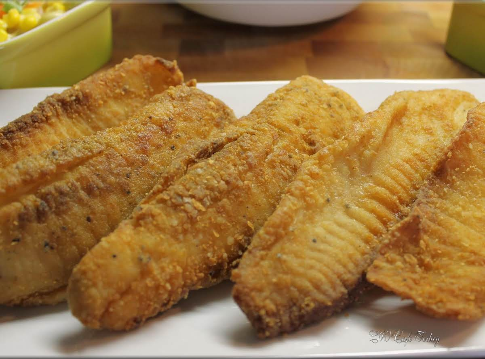

Michael's Fried Tilapia
Back

Description
The ingredients you need to make your own fried fish
meal are not hard to acquire. However, this recipe does
not use exact measurements.
You must rely on your own expertise to determine how
you would like to season your fish. In practicing this
form of creative expression you get the opportunity to
tailor your meal to your specific wants and needs. This
meal serves five.
Ingredients
- Lime juice
- Tilapia
- Garlic powder
- Onion powder
- Salt
- Pepper
- Flour
- Cornmeal
- Paprika
- Large ziploc (or plastic) bag
Recipe
- Soak your tilapia in a bowl of water and lime to
clean your fish.
- Cut your fish into sections for frying.
- Fill a frying pan up with 1 inch of oil covering
the entire surface and heat it over a high fire to
heat up the oil.
- In your ziploc bag, combine the garlic powder,
onion powder, salt, pepper, flour, cornmeal, and
paprika together. Close and shake your bag to mix
the seasoning.
- Place a cut of your fish in the bag and shake well
to cover the entire fish. Place your seasoned fish
in the frying pan. Repeat until your pan is filled
with fish.
- Watch your fish in the pan and turn every 1-2
minutes until your fish is lightly browned and
crispy.